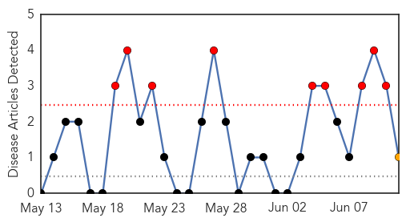
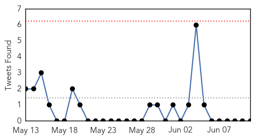
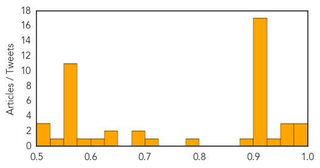

West Nile Virus
30-Day Web Trend
9 alerts, 1 warnings

30-Day Twitter Trend
0 alerts, 0 warnings

Article Locations
Article Confidences

Top Articles:
Top Tweets:
-
No tweets found for Jun 11, 2014
Unknown
30-Day Web Trend
30-Day Twitter Trend
0 alerts, 0 warnings

Article Locations

Article Confidences
Top Articles:
- 0.996
- Algeria reports first MERS fatality
- 0.994
- Ebola virus disease, West Africa (Situation as of 10 June 2014) - Guinea
- 0.992
- News Scan for Jun 11, 2014
- 0.967
- Algeria records 1st MERS virus case
- 0.961
- Experts collect litchi samples in Bihar to identify deadly virus
- 0.954
- Experts collect litchi samples in Bihar to identify deadly virus
- 0.926
- Epidemic: Six die, 60 hospitalised with gastroenteritis
- 0.923
- Meningococcal child death in Hunter
- 0.917
- Chicago Tribune
- 0.917
- Chicago Tribune
- 0.917
- Chicago Tribune
- 0.917
- Chicago Tribune
- 0.917
- Chicago Tribune
- 0.917
- Chicago Tribune
- 0.917
- Chicago Tribune
- 0.917
- Chicago Tribune
- 0.917
- Chicago Tribune
- 0.917
- Chicago Tribune
- 0.917
- Chicago Tribune
- 0.917
- Chicago Tribune
- 0.917
- Chicago Tribune
- 0.910
- The world windows to Thailand
- 0.910
- The world windows to Thailand
- 0.910
- The world windows to Thailand
- 0.877
- Public Health Notice: Outbreak of Salmonella infections related to contact with snakes and rodents used... -- OTTAWA, June 11, 2014
- 0.792
- PEDV 101 From ISU’s Dr. Phillip Gauger
- 0.707
- Unions accuse state of crippling mental health
- 0.686
- Researchers Look for Cause of Mysterious Deadly Kidney Disease in Central America
- 0.682
- Declare TB an emergency – rights group
- 0.650
- Bacterial infection could help to fight malaria
- 0.629
- TAC: TB Public Health Emergency
- 0.617
- WB: Children Asked Not to Eat Green Litchi
- 0.597
- Health : Commissioning of the new Hospital of OFTAMA in Les Cayes
- 0.570
- Mysterious kidney disease plagues Central America - Panorama
- 0.570
- Mysterious kidney disease plagues Central America
- 0.551
- Warring S. Sudan leaders agree deadline for new govt
- 0.551
- Three former prime ministers to run Sarkozy’s troubled UMP party
- 0.551
- No. 2 House Republican in shock loss to Tea Party rival
- 0.551
- Assad’s sister-in-law among Syrian regime’s fiercest critics
- 0.551
- Jolie, Britain's Hague unveil protocol to tackle rape in war zones
- 0.551
- Iraqi city of Tikrit falls to Islamist militants
- 0.551
- Analysis: Fallujah, Mosul, Tikrit down
- 0.551
- Half a million flee after Iraqi city of Mosul falls into militant hands
- 0.551
- DR Congo soldiers killed after incursion into Rwanda
- 0.548
- The complete genome sequences of poxviruses isolated from a penguin and a pigeon in South Africa and comparison to other sequenced avipoxviruses
- 0.524
- Spectrum Health First in Michigan to Implant Neurostimulator for Hard-to-Treat Epilepsy Patients
- 0.519
- Undocumented Immigrant Children Worry Disease Experts Who Fear US Borders May Be Deadly For The Unprotected
- 0.511
- Diarrhoea hits Bulawayo Polytechnic
Top Tweets:
-
No tweets found for Jun 11, 2014